Project
Young professionals experience a transition from ample free time to almost none, and the effort required to keep in touch with their university friends dramatically increases. With more effort comes more procrastination and decreased face time. This can lead to friends drifting apart without even realising it.
Role
Everything (personal project)
Process
-
Strategy
Research
Ideation
Information Architecture
Prototyping
UI
UX Strategy
Vision
Help busy young professionals keep in touch with their university friends (who are often in the same boat) and avoid drifting apart.
Hypothesis
That one of the reasons for this drifting apart was the amount of effort it takes to maintain the friendship (relative to before) and that by making it effortless, it would improve the state of people's friendships.
Research
Personas
-
John (personal use, primary persona): A recent grad with an active social life.
Helen (professional use): A sought-after industry figure.
{kind=link}
{kind=link}
Experience Maps


Mental Model
When presenting my work to my peers, I communicated the mental model through a series of illustrations to help build empathy in a more accessible way than just the persona alone.
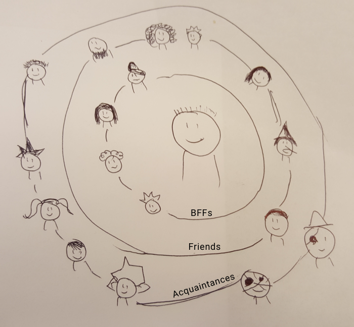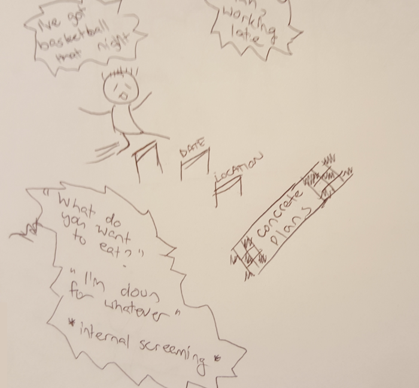 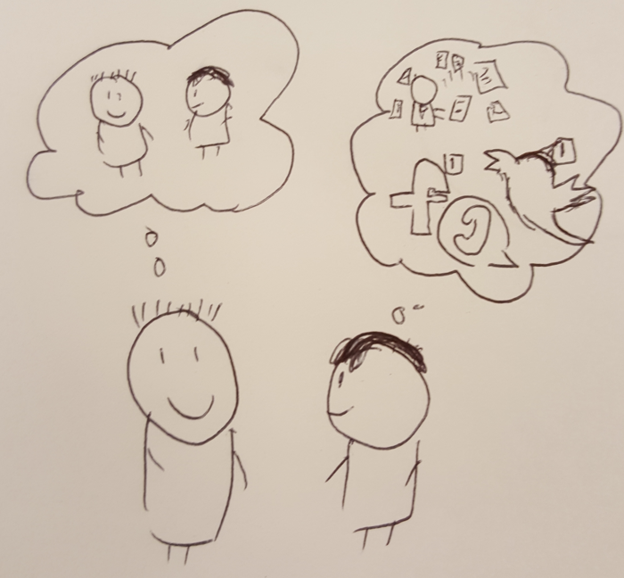{kind=link}
{kind=link}
{kind=link}

How Might We...
-
Reduce the number of interactions required to arrange a meeting
Make calendar alignment more accurate
Facilitate decisiveness with plans
Facilitate regular contact between friends/colleagues
Motivate people to make time for their friends
In keeping with my hypothesis, I ultmately decided to focus on the question "How might we reduce the interactions required to arrange a meeting?"
Ideation
I brainstormed solutions to the problem I wanted to solve by sketching 8 different ideas within two minutes. This allowed me to explore novel solutions. In the end, I settled on the idea of automating the entire process to make it effortless as possible.
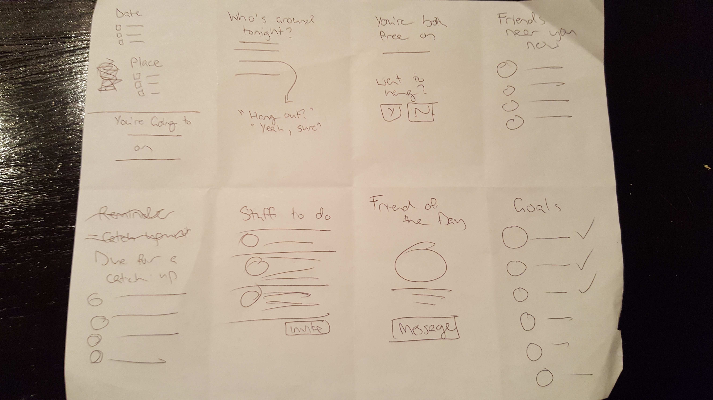Information Architecture
User Stories
Having converged from ideation, I extracted functional requirements in the form of user stories, which tied them to user needs.
{kind=link}
Task Flows
I then depicted all my epics/user stories as task flows, which allowed me to transition from the "what" to the "how".
{kind=link}
Prototyping
In my prototyping process, I started off on paper (for speed) and I iteratively made improvements based on usability testing. As the flow became more and more cemented, I moved up in fidelity.
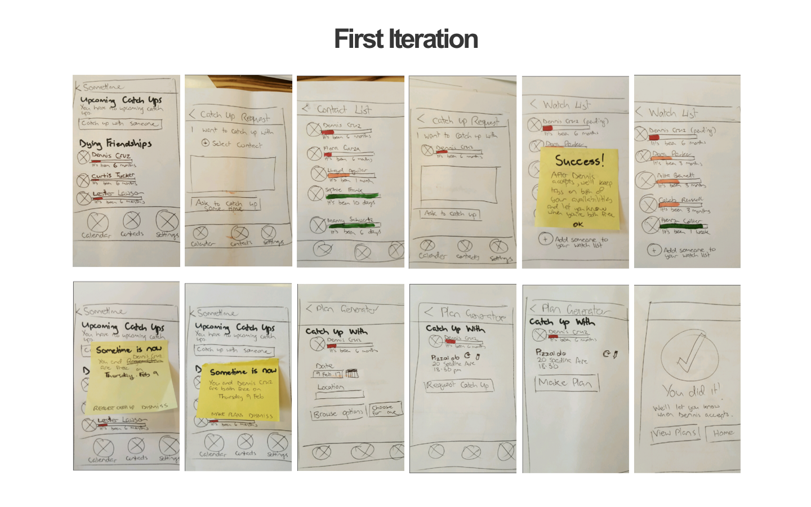 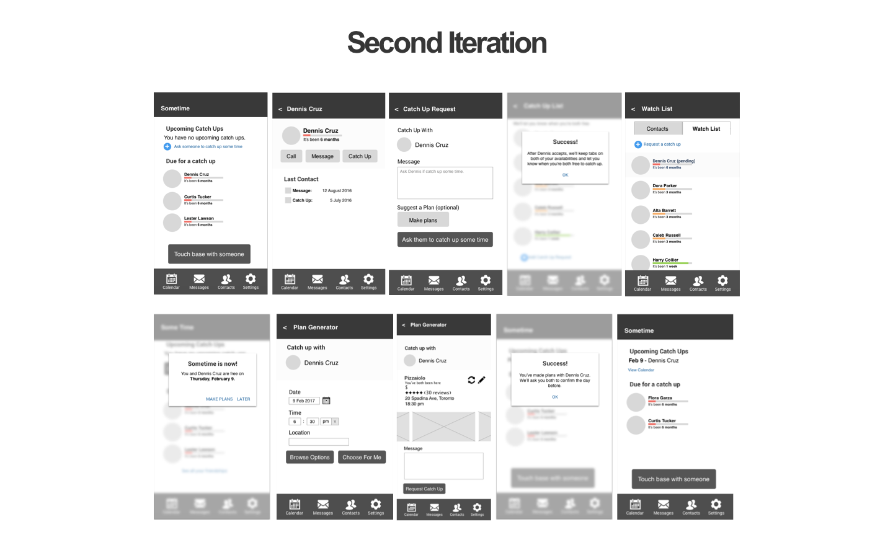{kind=link}
{kind=link}
Rationale: Iterations 1 and 2 were specifically trying to address the effortlessness element of my hypothesis by cutting out negotiation about date (by aligning calendars) and place (by suggesting places)
Why it didn’t work: It didn’t match the mental model of the users, which disoriented them and actually got in the way. There was too much requesting/accepting going on, which actually made it less expedient and caused more anxiety. Also, in trying to reduce the back and forth, it cut out the human element so it was very impersonal. It was at this point that I realised the "effortlessness" part of my hypothesis was incorrect. Effort is actually an integral part of the gesture.
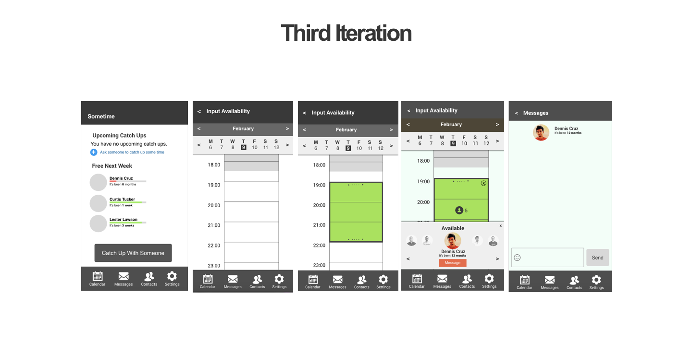{kind=link}
Rationale: Cutting out the first request by using mutual contact-adding as a proxy for intention to hang out sometime. Explicitly specifying availability was a way of getting around the fact that being free on a calendar may not mean actually being free, and also to cut down on the number of notifications. This decision was also made in light of the revised hypothesis (i.e. it doesn't have to be effortless any more)
Why it didn’t work: Although it does make it easier to make plans, it doesn’t address the original problem of keeping in touch with people (i.e. it doesn’t target people you haven’t seen for a while).
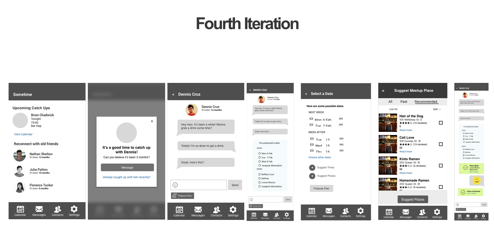{kind=link}
Rationale: Tying the reminder to time, rather than availability gets further to the core of the problem. Making messaging the main part of the process (rather than competing with it) matches the user’s mental model and retains that humanistic element, allowing them to connect with each other. Giving options (and allowing them to suggest alternatives) makes the decision making easier on both sides. It takes the pressure off of the initiator (who previously had to choose a single place) and it makes it easier for the receiver to give input (recognition over recall).
Going High Fidelity
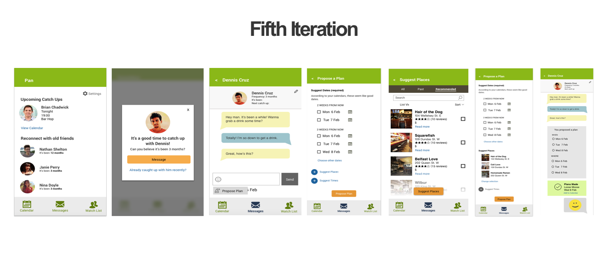 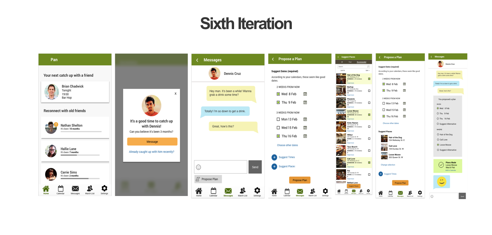{kind=link}
{kind=link}
Final UI Design


 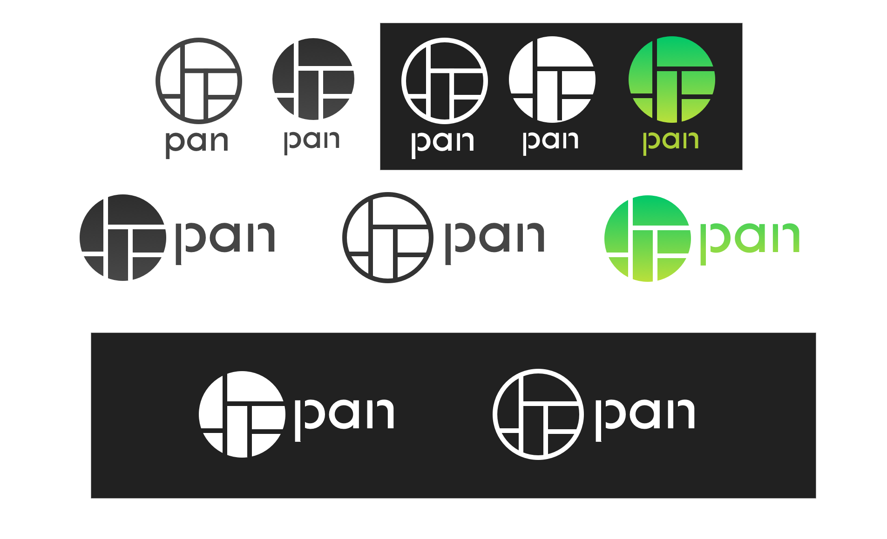
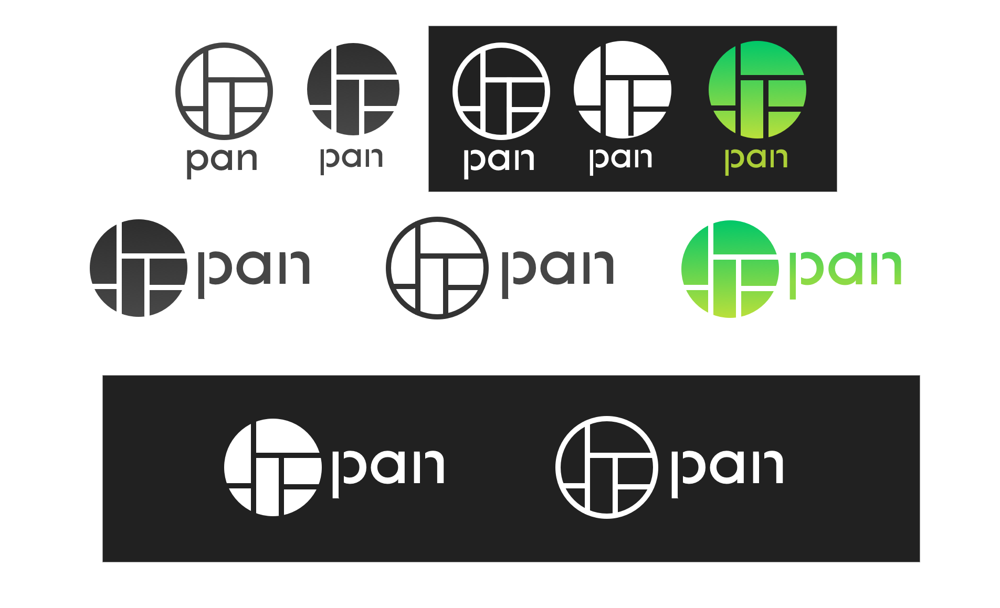
Results
The reaction in usability testing to the "final" prototype was significantly more positive than in the early stages. There was less confusion, and testers said (without any prompting) that they wanted to use the app (as opposed to in the beginning where they explicitly said that they wouldn't). Metrics that would be used to measure success if the project were to proceed would include:
-
Sign Ups
Plans proposed
Notifications dismissed
Next Steps
-
Further refinement of prototype
More research (especially quantitative)
Concierge method validation
Changes to explore
-
Cut out the messaging part, and instead integrate with existing messaging apps (e.g. Messenger, WhatsApp, etc.)
Expanding to groups of friends rather than just one on one